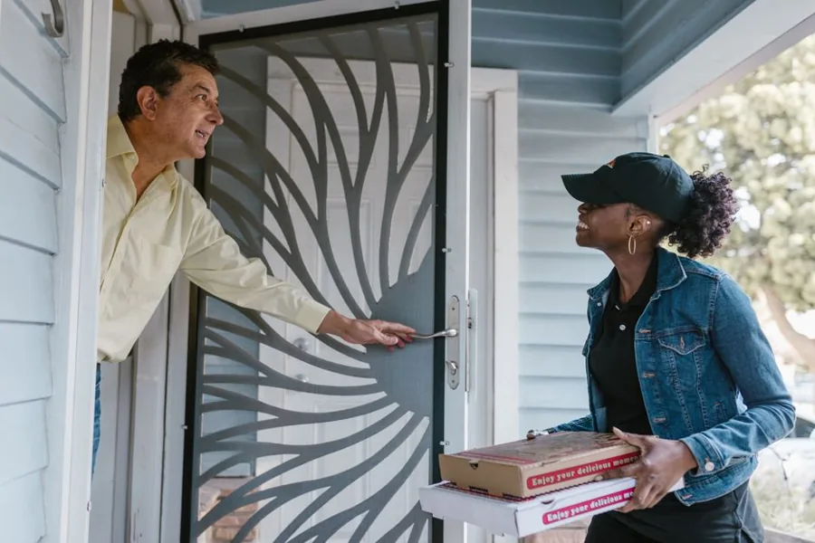
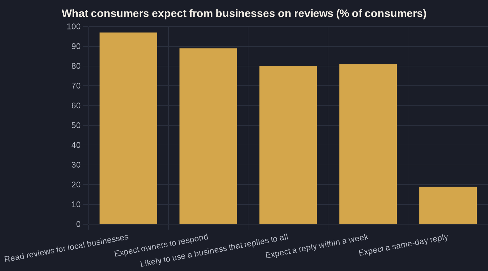

AI Review Management: Automate Requests and Replies
Reviews are the trust layer buyers check before they ever call you. Here's how automating the request and the reply gets you more of them, faster, without sounding like boilerplate.

Key takeaways
- Reviews are non-optional: 97% of consumers read them, and AI tools now read them too when recommending businesses.
- Responding lifts the asset: businesses that reply average 0.12 more stars and roughly 12% more reviews.
- Speed is the bottleneck: 81% expect a reply within a week and 19% want it the same day, which is impractical to do by hand at volume.
- Never ship boilerplate: generic replies make 50% of consumers less likely to choose you, so keep a human sign-off on every AI draft.
- Treat it as infrastructure: more reviews at a higher rating raise conversion on traffic you already pay for.
What AI Review Management Actually Does
AI review management is software that handles two repetitive jobs for you: asking happy customers for a review at the right moment, and drafting a reply to every review that lands. You keep the relationship and the final word. The machine just strips out the friction that stops most owners from doing either one consistently.
The reason it matters is volume and speed. 97% of consumers read reviews for local businesses, and 41% say they "always" read them when browsing, which makes your review profile the trust layer a buyer checks before they ever call. AI review management protects that layer by making the request and the reply happen on every job, not just when someone on staff happens to remember.
It is one piece of a connected system, not a standalone gadget. Review automation sits alongside your AI receptionist and your automated lead follow-up inside the wider AI marketing and automation stack, each piece closing a specific gap where leads or reputation quietly leak out.
Why Reviews Are the Trust Layer You Can't Skip
Reviews stopped being a nice-to-have a long time ago. 89% of consumers expect business owners to respond to reviews, and 80% say they are likely to use a business that responds to all of its reviews. The reply itself is a buying signal: it tells a stranger reading your profile that there is an owner paying attention, which is exactly the reassurance a skeptical buyer is looking for.
The audience for those reviews is also growing in a way most owners have not priced in. AI tools such as ChatGPT surged to become the third most popular source of local business recommendations, with usage jumping from 6% to 45% in a single year. Those assistants read your reviews to decide who to recommend, so recency and quality now feed the algorithm and the human at the same time.
Put plainly: your reviews are doing more work than ever, in front of more decision-makers than ever. That raises the cost of letting them sit stale or unanswered.

The Speed Problem Manual Replies Can't Solve
Speed is where manual review management quietly breaks down. 81% of consumers expect a response to their review within a week, and 19% now expect one the same day they post it, up from just 6% the year before. Hitting that window by hand, across Google, Facebook, and the rest, is a job nobody on a small team actually has time for.
This is the same leak that missed-call text-back plugs on the phone. The real cost of being slow is not the single review you were late on. It is the next buyer reading your profile who spots an unanswered complaint and quietly calls someone else. AI review management keeps you inside the expected window without adding another task to anyone's morning.
For a multi-location operator the problem multiplies. Five locations means five profiles, five inboxes, and five times the chance a review slips through. Centralizing the monitoring and the drafting in one system is the only way that stays manageable as you grow.
Automating the Request: The Half That Builds Volume
The request side is where you build the asset, and it is the half most owners neglect. The most reliable way to earn more reviews is to ask every customer right after a good experience, but "ask everyone" only actually happens when it is automatic. Good systems trigger the ask off a completed job, a closed ticket, or a paid invoice, then send a short, personalized message while the experience is still fresh.
- Trigger the ask from your CRM or invoicing tool, not a sticky note.
- Send by text for service jobs, where open rates beat email.
- Time it for the same day, while goodwill is highest.
The payoff compounds over time. When businesses began responding to reviews, their ratings rose by an average of 0.12 stars and they received roughly 12% more reviews. Engagement begets volume, and volume is what moves your average rating, which is the single clearest signal a local buyer uses to choose between you and the shop down the road.
| Task | Manual approach | AI-assisted approach |
|---|---|---|
| Review requests sent | When staff remembers, usually after the rush | Triggered automatically after every completed job |
| Time to first reply | Days, and often never | Minutes to hours, inside the same-day window |
| Reply consistency | Varies by who is on shift | On-brand every time, with human sign-off |
| Personalization | High effort, so it gets skipped | Drafted specific to the review, then owner edits |
| Volume over 90 days | Sporadic and unpredictable | Steady, tied directly to job count |

Automating the Reply: Speed Without the Boilerplate Trap
The reply side is where AI earns its keep, and where it can burn you if you are careless. 92% of customer service leaders report that AI has helped improve their response time, so drafting a thoughtful reply to every review in seconds is genuinely a solved problem now.
But speed without personalization backfires hard. Templated or generic responses make 50% of consumers unlikely to choose a business, so the goal is never a canned "Thanks for your feedback!" on repeat. Good AI review management drafts a specific reply that references what the customer actually said, then routes it to a person for a five-second edit and sign-off before it posts. That keeps the speed of automation and the warmth of a real owner.
The Owner's Math on Review Management
Run review management through the same lens as any marketing spend: what does a dollar return? My Owner's Math approach traces it from impression to booked job, and review management shows up as a conversion multiplier rather than a traffic source. A higher rating and a steady stream of fresh reviews lift the rate at which your existing profile views turn into calls.
Here is the math in plain numbers. Say your Google profile gets 300 views a month and 6% of those call you, which is 18 calls. Nudge that to 8% because your rating climbed half a star and every review now gets a reply, and you have added six calls a month with zero extra ad spend. At a typical local job value, those six calls usually pay for the tooling several times over.
That is why I treat AI review management as infrastructure, not a line-item luxury. You are squeezing more booked work out of the traffic you are already paying for.
Where AI Helps and Where You Still Sign Off
The line between AI and human is what makes this work instead of embarrassing you. Use the machine for the parts that are repetitive and time-sensitive: detecting a new review, drafting an on-brand reply, sending the request at the right moment, and flagging anything negative for fast attention. Keep a person on the parts that carry judgment.
- Let AI draft, but never auto-post a reply to a one-star review.
- Route anything touching a refund, a medical detail, or a legal matter to a human first.
- Keep the request message in your own plain voice, not a generic template.
Done this way, AI review management gives you the consistency of a system with the credibility of an owner who reads what people say. If you want to see what it would return on your own numbers, your traffic, your rating, your average job value, that is exactly the kind of thing we map out together on a call, and it is the practical math I walk through with the owners on my newsletter.
Sources
Want this run on your numbers?
Book a call and we will run the Owner's Math on your business — clear numbers, a straight plan, no pitch. Or read the free Playbook first.